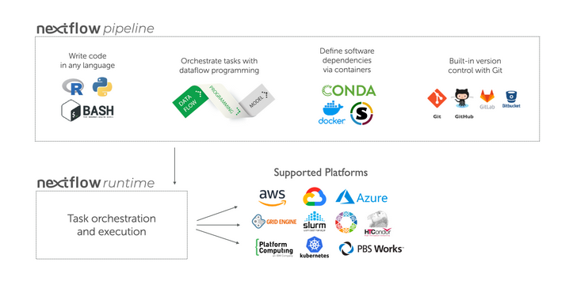

Nextflow tutorial
This material is adapted from the https://training.nextflow.io/latest/.
Training material
The material for this training is available at
medbioinfo2025/common_data/nf-trainingCopy this folder into your course directory.
Basic concepts:
Nextflow is a workflow orchestration engine and domain-specific language (DSL) that makes it “easy” to write data-intensive computational workflows.
It is designed around the idea that the Linux platform is the lingua franca of data science. Linux provides many simple but powerful command-line and scripting tools that, when chained together, facilitate complex data manipulations.
Nextflow extends this approach, adding the ability to define complex program interactions and a high-level parallel computational environment, based on the dataflow programming model. Nextflow’s core features are:
- Workflow portability and reproducibility
- Scalability of parallelization and deployment
- Integration of existing tools, systems, and industry standards
Processes and Channels:
In practice, a Nextflow workflow is made by joining together different processes. Each process can be written in any scripting language that can be executed by the Linux platform (Bash, Perl, Ruby, Python, etc.).
Processes are executed independently and are isolated from each other, i.e., they do not share a common (writable) state. The only way they can communicate is via asynchronous first-in, first-out (FIFO) queues, called channels.
Any process can define one or more channels as an input and output. The interaction between these processes, and ultimately the workflow execution flow itself, is implicitly defined by these input and output declarations.
Below is a visualization of a process:

And here the way this could be implemented in a process block as part of a Nextflow pipeline:
process PROCESS_NAME{
input:
data z
data y
data x
// directives
container
script:
task1
task2
task3
output:
output x
output y
output z
}Quick side information about channels (advanced, but good to keep in mind):
In Nextflow there are two kinds of channels: queue channels and value channels.
A queue channel is a non-blocking unidirectional FIFO queue which connects two processes, channel factories, or operators.
The content of a queue channel is consumed and can only be read once, which is usually fine in a workflow. However, if you need to re-use the same content you need a Value channel.
A value channel a.k.a. singleton channel is bound to a single value and can be read an unlimited number of times without consuming its content.
More information here: https://www.nextflow.io/docs/latest/channel.html#channel-types
Execution abstraction
Another important concept in Nextflow. This is the way you ran fastQC on your samples in pre-course exercise 7:
srun -A project_ID -t 15:00 -n 1 fastqc --noextract -o fastqc data data/sample_1.fastq.gz data/sample_2.fastq.gz Here, there is a mix of information on what command should be executed (fastqc with the noextract option) and information on how the script should be run on the target platform (debitted to which project, run for 15 minutes etc.).
In Nextflow the process defines what command or script is executed, the executor determines how that script is run in the target platform.
If not otherwise specified, processes are executed on the local computer. The local executor is very useful for workflow development and testing purposes, however, for real-world computational workflows a high-performance computing (HPC) or cloud platform is often required.
In other words, Nextflow provides an abstraction between the workflow’s functional logic and the underlying execution system (or runtime). Thus, it is possible to write a workflow that runs seamlessly on your computer, a cluster, or the cloud, without being modified. You simply define the target execution platform in the configuration file.

Scripting language
Nextflow is a Domain Specific Language (DSL) implemented as an extension of the Groovy programming language. This means that Nextflow can run any Groovy and Java code. It is not necessary to learn Groovy to use Nextflow DSL but it can be useful in edge cases where you need more functionality than the DSL provides.
But remember: Each process can be written in any scripting language that can be executed by the Linux platform (Bash, Perl, Ruby, Python, etc.). This is done in the script part of the process.
Your first script
Here you will execute your first Nextflow script (hello.nf), which we will go through line-by-line.
In this toy example, the script takes an input string (a parameter called params.greeting) and splits it into chunks of six characters in the first process. The second process then converts the characters to upper case. The result is finally displayed on-screen.
But first we need to set up the Pixi nextflow environment.
Start a screen session and initialize the Pixi environment:
screen -S nextflow
pixi init -c bioconda -c conda-forgeHow do we add nextflow to our environment?
Nextflow code
Here is a simple nextflow file:
#!/usr/bin/env nextflow
params.greeting = 'Hello world!'
greeting_ch = Channel.of(params.greeting)
process SPLITLETTERS {
input:
val x
output:
path 'chunk_*'
script:
"""
printf '$x' | split -b 6 - chunk_
"""
}
process CONVERTTOUPPER {
input:
path y
output:
stdout
script:
"""
cat $y | tr '[a-z]' '[A-Z]'
"""
}
workflow {
letters_ch = SPLITLETTERS(greeting_ch)
results_ch = CONVERTTOUPPER(letters_ch.flatten())
results_ch.view{ it }
}This code begins with a shebang that declares Nextflow as the interpreter.
Then we declare a parameter “greeting” and initialize it with the value “Hello world!”.
Then we initialize a channel labeled “greeting_ch”. It contains the value from params.greeting. This channel is the input for the processes in the workflow.
Next we define the process named “SPLITLETTERS”. This is also called a process block. It starts by naming the process, and its definition is enclosed by squiggly brackets.
Within the process block we declare the input for the process. Inputs can be values (val), files, paths, or other qualifiers (more see here). We tell the process to expect an input value (val), which we assign to the variable “x”.
Then, we define the output of the process.
We tell the process to expect an output file (path), with a filename starting with “chunk_”, as output from the script. The process sends the output as a channel.
We then define the script portion of the process. Three double quotes start and end the code block to execute this process. Inside is the code to execute — printing the input value x (called using the dollar symbol [$] prefix), splitting the string into chunks with a length of 6 characters (“Hello” and “world!”), and saving each to a file (chunk_aa and chunk_ab).
Look at the next process. What happens in there?
At the end, we define the workflow scope, where each process is called. The workflow scope starts with “workflow” and is enclosed in squiggly brackets:
First, execute the process SPLITLETTERS on the greeting_ch (aka greeting channel), and store the output in the channel letters_ch.
Then, execute the process CONVERTTOUPPER on the letters channel letters_ch, which is flattened using the operator .flatten(). This transforms the input channel in such a way that every item is a separate element. We store the output in the channel results_ch.
Finally, we print the final output (in results_ch) to screen using the view operator (appended onto the channel name).
Quick side information about the Nextflow code:
The order in which the workflow scope and the process blocks appear in the nextflow file does not matter. As it is, I prefer having the workflow scope at the top (you will see that later), followed by the process blocks.
Similarly, within the process block it does not matter in which order you declare the different parts. My personal preference is the order input, process, output.
Let’s run this script!
In the directory where the nextflow script is located, run
pixi run nextflow run hello.nfThe output looks something like this:
N E X T F L O W ~ version 25.04.7
Launching `hello.nf` [jolly_faraday] DSL2 - revision: f5e335f983
executor > local (3)
[96/fd5f07] SPLITLETTERS (1) [100%] 1 of 1 ✔
[7e/dad424] CONVERTTOUPPER (2) [100%] 2 of 2 ✔
HELLO
WORLD!The standard output shows (line by line):
- The version of Nextflow that was executed.
- The script and version names.
- The executor used (in the above case: local). Tsk tsk tsk.
- he first process is executed once, which means there is one task. The line starts with a unique hexadecimal value**, and ends with the percentage and other task completion information.
- The second process is executed twice (once for chunk_aa and once for chunk_ab), which means two tasks.
- The result string from stdout is printed.
** The hexadecimal numbers, like 96/fd5f07, identify the unique process execution, that we call a task. These numbers are also the prefix of the directories where each task is executed. You can inspect the files produced by changing to the directory $PWD/work and using these numbers to find the task-specific execution path.
It’s worth noting that the process CONVERTTOUPPER is executed in parallel, so there’s no guarantee that the instance processing the first split (the chunk Hello ’) will be executed before the one processing the second split (the chunk ’world!).
This means you might see
WORLD!
HELLO on your screen.
Modify and resume:
Nextflow keeps track of all the processes executed in your workflow. If you modify some parts of your script, only the processes that are changed will be re-executed. The execution of the processes that are not changed will be skipped and the cached result will be used instead.
This allows for testing or modifying part of your workflow without having to re-execute it from scratch.
For the sake of this tutorial, modify the CONVERTTOUPPER process in the previous example, replacing the process script with the string rev $y, so that the process looks like this:
process CONVERTTOUPPER {
input:
path y
output:
stdout
script:
"""
rev $y
"""
}Then, save the file with the same name, and execute it by adding the -resume option to the command line:
pixi run nextflow run hello.nf -resumeYou will see that the execution of the process SPLITLETTERS is skipped (the task ID is the same as in the first output) — its results are retrieved from the cache. The second process is executed as expected, printing the reversed strings.
Quick side note on the cache:
The workflow results are cached by default in the directory $PWD/work. Depending on your script, this folder can take up a lot of disk space. If you are sure you won’t need to resume your workflow execution, clean this folder periodically. We will get into the how to in a bit.
Workflow parameters:
As we have seen workflow parameters are simply declared by prepending the prefix params to a variable name, separated by a dot character (e.g. params.greeting). Their value can alternatively be specified on the command line by prefixing the parameter name with a double dash character, i.e. --paramName.
Now, let’s try to execute the previous example specifying a different input string parameter, as shown below:
pixi run nextflow run hello.nf -resume --greeting 'Bonjour le monde!'Quick side note on configuration files and hierarchies:
When a pipeline script is launched, Nextflow looks for configuration files in multiple locations. Since each configuration file can contain conflicting settings, the sources are ranked to determine which settings are applied. Possible configuration sources, in order of priority:
- Parameters specified on the command line (–something value)
- Parameters provided using the -params-file option
- Config file specified using the -c my_config option
- The config file named nextflow.config in the current directory
- The config file named nextflow.config in the workflow project directory
- The config file $HOME/.nextflow/config
- Values defined within the pipeline script itself (e.g. main.nf)
When more than one of these options for specifying configurations are used, they are merged, so that the settings in the first override the same settings appearing in the second, and so on.
Clean up Nextflow:
Periodically, it makes sense to clean up your nextflow working directory. You can do that manually, but the non-descriptive nature of the file system makes that difficult. Fortunately, Nextflow keeps track of your nextflow runs and their files.
pixi run nextflow logwill show you the executions log and runtime information of all Nextflow runs executed from the current directory(!!).
nextflow cleanwill clean up the project cache and the work directories. Specify the run name and option as explained here.
An example that cleans all runs before the named run and forces the clean up:
pixi run nextflow clean -before <RUN NAME> -f